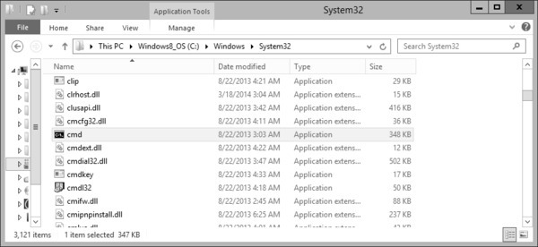
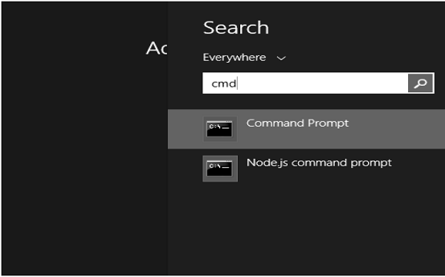
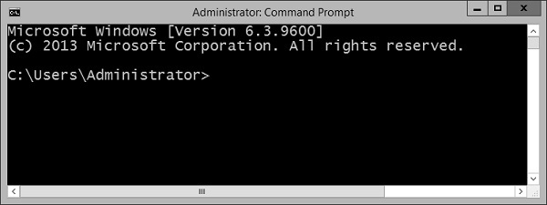

- Batch Script Tutorial
- Batch Script - Home
- Batch Script - Overview
- Batch Script - Environment
- Batch Script - Commands
- Batch Script - Files
- Batch Script - Syntax
- Batch Script - Variables
- Batch Script - Comments
- Batch Script - Strings
- Batch Script - Arrays
- Batch Script - Decision Making
- Batch Script - Operators
- Batch Script - DATE & TIME
- Batch Script - Input / Output
- Batch Script - Return Code
- Batch Script - Functions
- Batch Script - Process
- Batch Script - Aliases
- Batch Script - Devices
- Batch Script - Registry
- Batch Script - Network
- Batch Script - Printing
- Batch Script - Debugging
- Batch Script - Logging
- Batch Script Resources
- Batch Script - Quick Guide
Batch Script - Environment
This chapter explains the environment related to Batch Script.
Writing and Executing
Typically, to create a batch file, notepad is used. This is the simplest tool for creation of batch files. Next is the execution environment for the batch scripts. On Windows systems, this is done via the command prompt or cmd.exe. All batch files are run in this environment.
Following are the different ways to launch cmd.exe −
Method 1 − Go to C:\Windows\System32 and double click on the cmd file.
Method 2 − Via the run command – The following snapshot shows to find the command prompt(cmd.exe) on Windows server 2012.
Once the cmd.exe is launched, you will be presented with the following screen. This will be your environment for executing your batch scripts.
Environment Variables
In order to run batch files from the command prompt, you either need to go to the location to where the batch file is stored or alternatively you can enter the file location in the path environment variable. Thus assuming that the batch file is stored in the location C:\Application\bin, you would need to follow these instructions for the PATH variable inclusion.
| OS | Output |
|---|---|
| Windows | Append the String; C:\Application\bin to the end of the system variable PATH. |